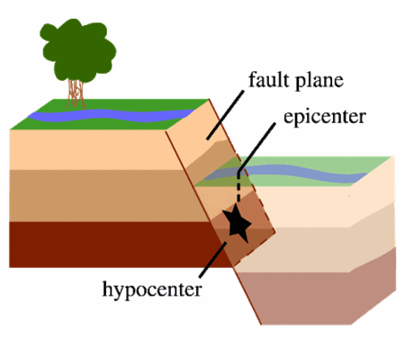
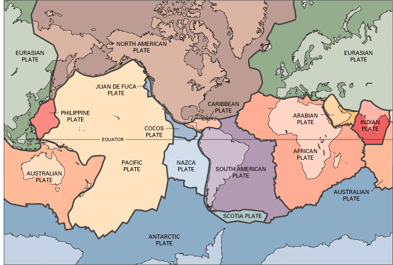

Check with your regional network for more comprehensive earthquakes information on
your region.
What is an earthquake?
An earthquake is what happens when two blocks of the earth suddenly slip
past one another. The surface where they slip is called the fault or fault
plane. The location below the earth’s surface where the earthquake starts is
called the hypocenter, and the location directly above it on the surface of
the earth is called the epicenter.
Sometimes an earthquake has foreshocks. These are
smaller earthquakes that happen in the same place as the larger earthquake
that follows. Scientists can’t tell that an earthquake is a foreshock until
the larger earthquake happens. The largest, main earthquake is called the
mainshock. Mainshocks always have aftershocks that follow. These are smaller
earthquakes that occur afterwards in the same place as the mainshock.
Depending on the size of the mainshock, aftershocks can continue for weeks,
months, and even years after the mainshock!

A normal (dip-slip) fault is an inclined fracture
where the rock mass above an inclined fault moves down (Public domain.)
What causes earthquakes and where do they happen?
The earth has four major layers: the inner core, outer core, mantle and
crust. The crust and the top of the mantle make up a thin skin on the
surface of our planet.
But this skin is not all in one piece – it is made up of many pieces like a
puzzle covering the surface of the earth. Not only that, but these puzzle
pieces keep slowly moving around, sliding past one another and bumping into
each other. We call these puzzle pieces tectonic plates, and the edges of
the plates are called the plate boundaries. The plate boundaries are made up
of many faults, and most of the earthquakes around the world occur on these
faults. Since the edges of the plates are rough, they get stuck while the
rest of the plate keeps moving. Finally, when the plate has moved far
enough, the edges unstick on one of the faults and there is an earthquake.

The tectonic plates divide the Earth's crust into
distinct "plates" that are always slowly moving. Earthquakes are
concentrated along these plate boundaries. (Public domain.)